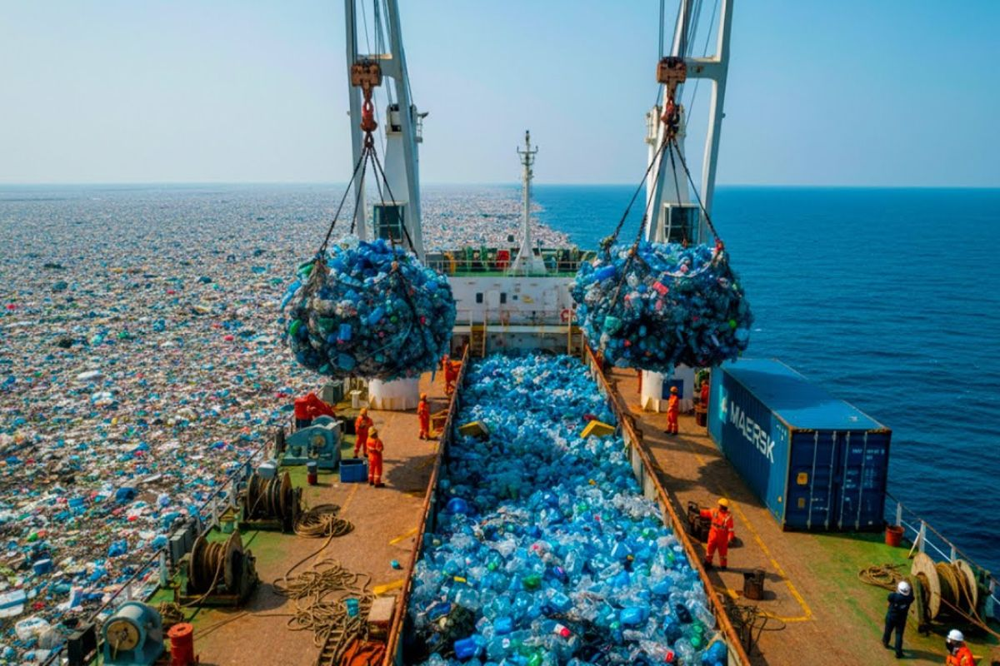
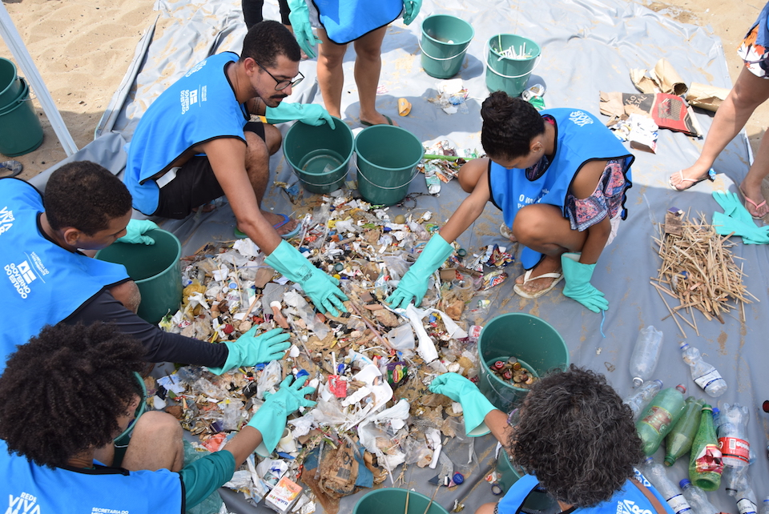

O oceano limpa a nossa alma, cabe-nos a nós limpar o seu lixo!


🐢 O nosso planeta é azul, mas estamos a afogá-lo em plástico. Sabias que mais de 80% do lixo marinho vem de terra? O que deitamos na rua hoje pode terminar no estômago de uma tartaruga amanhã. Mudar este cenário está nas nossas mãos!
- Recusa os descartáveis Troca as garrafas e sacos de plástico por opções reutilizáveis.
- Cuidado com o que deitas no chão A chuva e o vento levam o lixo da rua direto para os rios e mares.
- 💡 Participa em limpezas de praia Junta um grupo de amigos e faz a diferença na tua costa local.
- Pequenas ações em terra geram grandes ondas de mudança no mar. Vamos proteger o azul do nosso planeta?